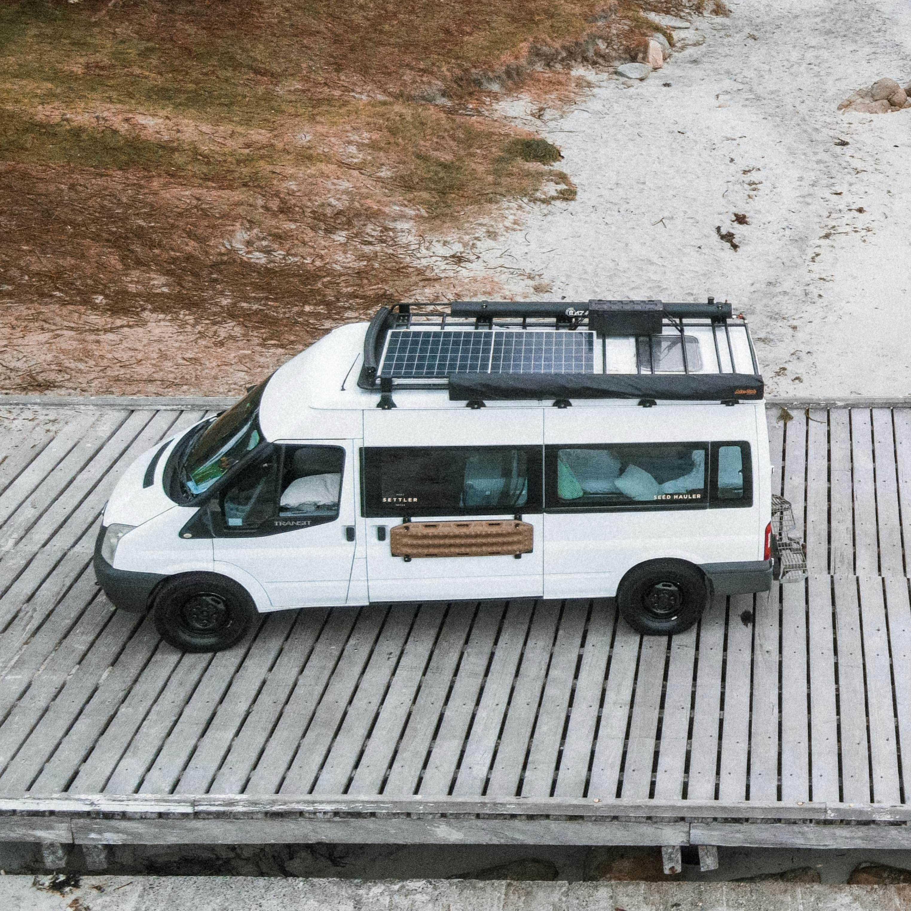

Concevoir le système électrique d'un van aménagé n'est pas seulement une question
de choisir une batterie ou quelques panneaux solaires.
Chaque décision dépend de vos usages, de votre autonomie souhaitée,
de vos habitudes de déplacement et des conditions dans lesquelles vous comptez voyager.
Ce simulateur a été conçu pour vous aider à estimer les principaux paramètres
de votre installation et à comprendre les compromis associés.
Son objectif n'est pas de remplacer une étude détaillée,
mais de fournir une première base de réflexion cohérente et réaliste.

Pourquoi le dimensionnement électrique est-il important ?
Les systèmes électriques de vans aménagés semblent souvent plus simples
qu'ils ne le sont réellement.
Deux personnes peuvent avoir la même consommation quotidienne
et pourtant nécessiter des installations très différentes.
Un utilisateur qui roule chaque jour dans le sud de l'Europe
ne sera pas confronté aux mêmes contraintes qu'une personne
stationnant plusieurs jours en hiver avec une activité de télétravail.
La plupart des erreurs proviennent d'hypothèses incomplètes :
consommation sous-estimée, production solaire surestimée,
autonomie insuffisante ou absence de marge pour les situations défavorables.
Le défi n'est pas seulement de calculer des la taille d'une batterie en wattheures.
Il consiste à concevoir un système capable de répondre à un usage réel, en tenant compte
des usages, de l'autonomie souhaitée, de la puissance maximale nécessaire et des sources
de recharges disponibles.
Présentation du simulateur
Ce que fait le simulateur
Le simulateur estime les principaux éléments de votre installation électrique à partir de quelques informations simples :
- vos consommations quotidiennes ;
- votre autonomie souhaitée ;
- votre mode d'utilisation ;
- les conditions d'exploitation envisagées.
À partir de ces données, il propose un premier dimensionnement de batterie
et de production solaire ainsi qu'une architecture cohérente avec
le profil d'usage décrit.
L'objectif est de fournir un ordre de grandeur réaliste et d'identifier
les contraintes qui influencent réellement le dimensionnement.
Fonctionnement du simulateur
Le calcul repose sur une approche systémique.
Plutôt que de raisonner uniquement composant par composant,
le simulateur cherche à prendre en compte les interactions entre :
- les besoins énergétiques;
- les capacités de stockage;
- les capacités de production;
- les scénarios d'usage;
- les marges nécessaires pour conserver une autonomie confortable
Les résultats sont volontairement présentés de manière pédagogique afin de mettre en évidence les principaux facteurs de dimensionnement.
Ce que vous obtenez
À l'issue du calcul, vous obtenez :
- une estimation de votre consommation énergétique quotidienne ;
- une capacité batterie recommandée ;
- une puissance solaire indicative ;
- une architecture type adaptée à votre usage ;
- des explications sur les hypothèses ayant le plus d'impact sur le résultat.
L'objectif n'est pas uniquement d'obtenir un chiffre, mais de comprendre pourquoi ce chiffre a été retenu.
Pourquoi cette approche est différente
De nombreux calculateurs se limitent à additionner des consommations
puis à afficher une capacité batterie.
Cette approche est souvent insuffisante pour évaluer la pertinence
d'un système complet.
Le simulateur proposé ici cherche à replacer le dimensionnement
dans son contexte réel d'utilisation. Il met l'accent sur les compromis,
les contraintes saisonnières, les habitudes de déplacement et
les marges de sécurité nécessaires.
Cette démarche s'inspire des méthodes utilisées pour concevoir
et analyser des systèmes complexes : comprendre les interactions
avant de choisir les composants.
Simulateur de dimensionnement électrique pour van aménagé
Estimation pédagogique destinée à fournir un ordre de grandeur réaliste
pour le stockage batterie et la puissance solaire nécessaires.
| Équipement | Puissance (W) | Nombre | Heures / jour |
|---|
Hypothèses : système 12 V, calcul simplifié sans prise en compte des
rendements liés à l'orientation des panneaux,
ombrages, convertisseur 230 V. La taille recommandée de la batterie ne prend pas
encore en compte le courant maximal instantané demandé par les équipements de forte
puissance (> 500W).
Consommation journalière
0 Wh
Production journalière
0 Wc
Batterie recommandée
0 Ah
Robustesse
-
FAQ
Questions fréquentes sur le simulateur électrique pour van aménagé
Le solaire suffit-il toute l'année ?
Pas toujours. La saison, la météo et la fréquence des déplacements ont un impact majeur sur l'énergie réellement disponible.
Quelle technologie de batterie est prise en compte ?
Le simulateur calcule votre besoin énergétique, puis propose une capacité de batterie en fonction de la technologie choisie (plomb, lithium, etc.), en tenant compte du taux de décharge admissible en fonction de la technologie.
Les résultats sont-ils fiables ?
Les résultats reposent sur les informations fournies et sur des hypothèses représentatives d'usages courants. Ils doivent être considérés comme une aide à la décision et non comme une validation technique définitive.
Puis-je utiliser ces résultats pour acheter mon matériel ?
Les résultats permettent d'obtenir des ordres de grandeur cohérents. Avant un investissement important, il reste recommandé de vérifier les hypothèses spécifiques à votre projet.
Puis-je utiliser le simulateur pour un système off-grid fixe ?
Cette première version a été conçue pour les vans aménagés. Certaines estimations peuvent toutefois être pertinentes pour de petits systèmes autonomes.
Le simulateur remplace-t-il une étude électrique complète ?
Non. Il s'agit d'un outil d'aide à la décision destiné à fournir une première estimation cohérente et à faciliter la compréhension du problème.